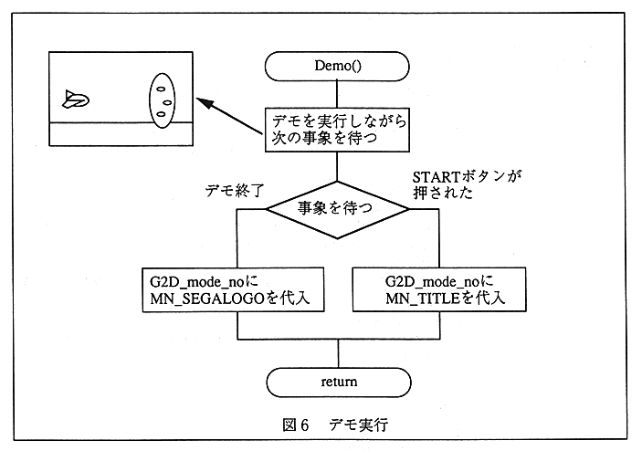

The program selection screen as shown in Fig. 6 is displayed.
∙ Select with the top and bottom of the cross button, and run the program such as sample or game with C button.
When the program is finished, the game mode variable will be set to SELECT_MODE and the program will return.
Also, when 〈EXIT〉 is selected, the game mode variable is set to LOGO_MODE and the process returns, so the Sega logo will be displayed unconditionally.

Figure 6 Demo execution
The program selection menu is as follows.
- SCROLL SAMPLE
- SPRITE SAMPLE
- WINDOW SAMPLE
- GAME SAMPLE
- EASY SOUND TEST
- 〈EXIT〉